ЛабораторииКод
Amazon Quick и New Relic: агент для triage инцидентов с интеграцией в Asana
Amazon Quick и New Relic выпустили агента для инцидент-менеджмента с интеграцией в Asana
AWS Machine Learning Blog
9 июн. 2026 г.Официальные анонсы от ведущих AI-компаний: новые модели, API, инструменты и исследовательские публикации.
109 материалов
Amazon Quick и New Relic выпустили агента для инцидент-менеджмента с интеграцией в Asana

AWS научила Amazon Bedrock держать ИИ-запросы внутри ЕС — как это работает и зачем нужно GDPR

Закройте ноутбук — агент продолжит работу в облаке AWS. Как устроен AgentCore Runtime

Как AWS решает задачи, где ML даёт «вероятно», а бизнесу нужно «точно»

ML-инференс в облаке без раскрытия данных даже самому облаку — как это работает с FHE и SageMaker ИИ
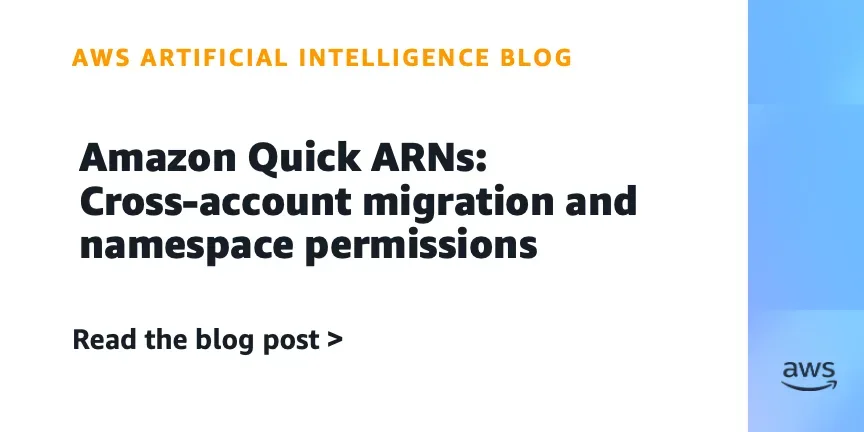
Почему права доступа к дашборду исчезают после миграции — и как это исправить через ARN
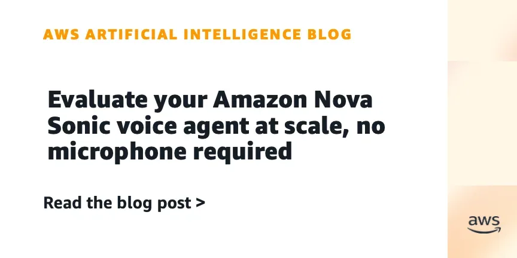
AWS выпустила Nova Sonic Test Harness — open-source инструмент для автоматического тестирования голосовых агентов без микрофона.
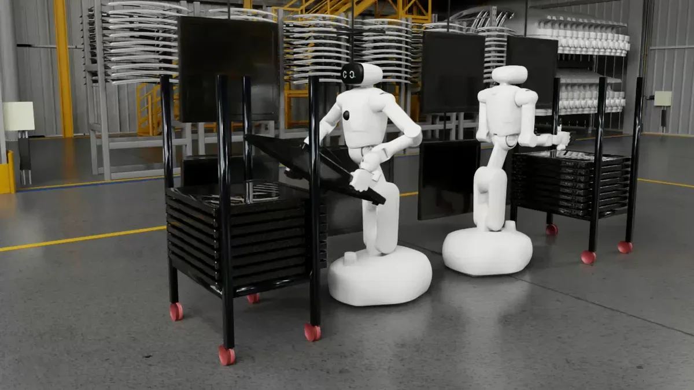
NVIDIA и LG Group создают ИИ-фабрику для роботов, автономного вождения и облачных GPU-сервисов.
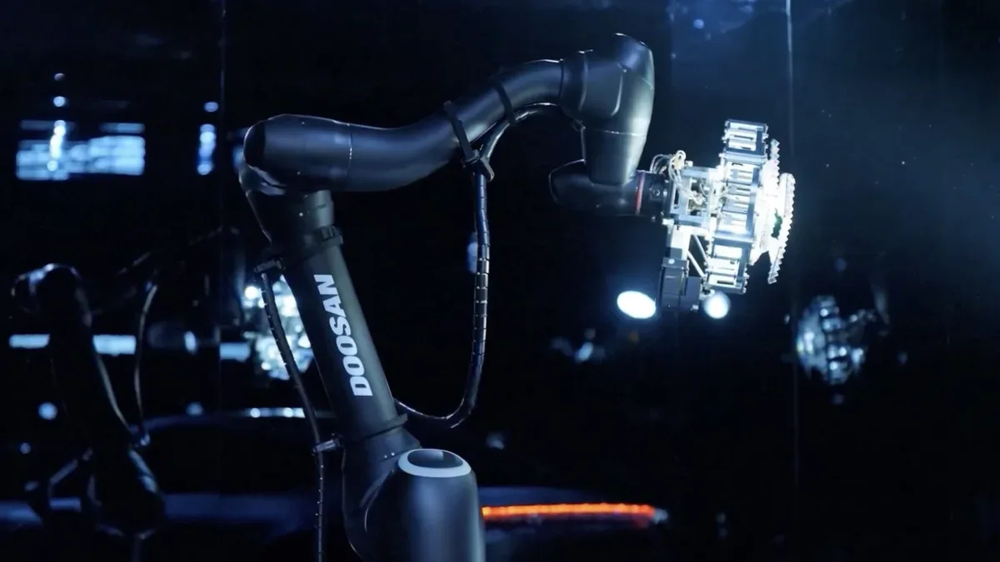
NVIDIA и Doosan Group объединяют усилия в четырёх направлениях: от роботов и энергетики до материалов для серверов
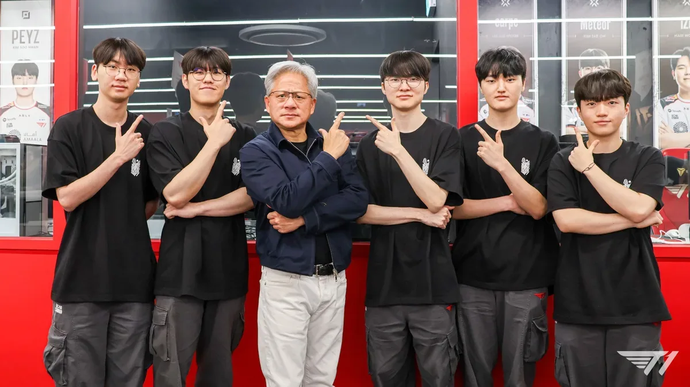
NVIDIA представила RTX Spark в Корее: что это и зачем геймерам

Endava переводит разработку на ИИ-агентов: опыт внедрения OpenAI в 11-тысячной компании

Google открыла код ИИ-модели паводков: нацслужбы смогут обучать её на своих данных

GraspGen-X, LCDrive и NitroGen — как NVIDIA решает проблему обобщения в робототехнике, автономном вождении и обучении агентов.

NVIDIA на CVPR анонсировала Cosmos 3, Alpamayo 2 Super и новые инструменты для симуляции физического ИИ и AV.

NVIDIA и партнёры создают автономных ИИ-инженеров на базе открытого blueprint NemoClaw — сокращение времени проектирования с недель до часов.

Google I/O 2026: новые ИИ-инструменты ускоряют научные открытия — от генерации гипотез до рецензирования статей.

Google DeepMind открывает климатический акселератор в АТР — буткемп в Сингапуре и доступ к frontier ИИ
NVIDIA вручила первые Vera CPU лабораториям: чем важен новый процессор для агентного ИИ.

Берлинский стартап автоматизирует колл-центры на GPT-5 — и сокращает звонки операторам на 80%
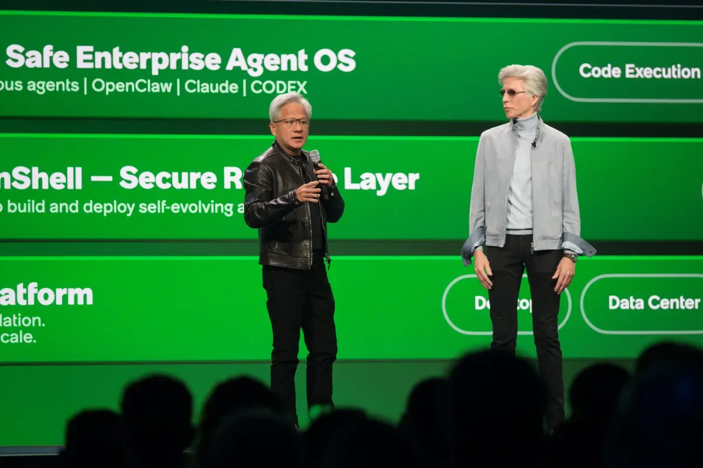
NVIDIA и ServiceNow показали агента, который сам работает на вашем компьютере — с контролем и без утечек данных
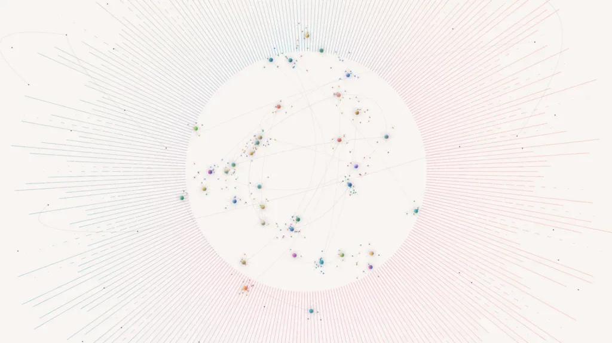
Четыре паттерна работы с ИИ-агентами: что Microsoft советует перестроить в операционной модели компании
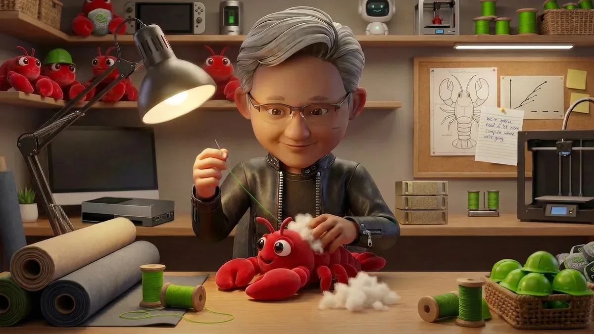
OpenClaw обогнал React на GitHub. NVIDIA сделала из него корпоративный инструмент с защитой данных

ERA от Google решает задачи от прогноза эпидемий до нерешённых уравнений космологии — уже в реальном времени
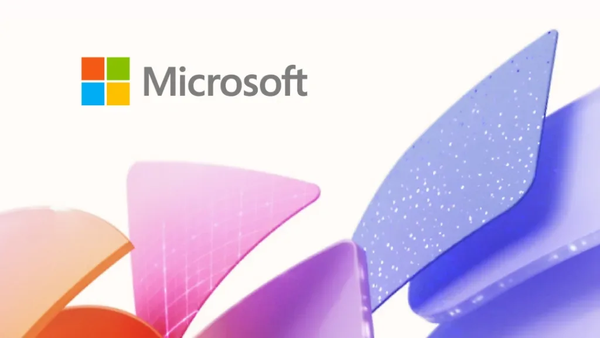
Air India, BMW, Mercedes-Benz и KPMG: как корпорации переходят от ИИ-экспериментов к реальным деньгам
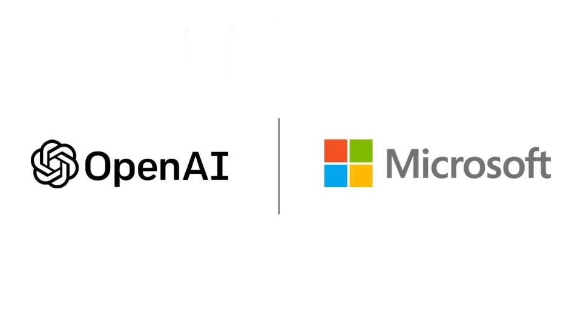
Microsoft перестаёт платить OpenAI, лицензия с 2032 года — неисключительная. Партнёрство переписано, но не разорвано.
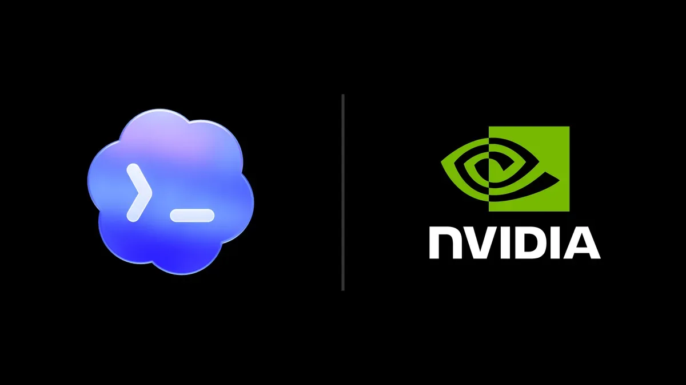
10 000 сотрудников NVIDIA уже используют GPT-5.5 в работе — что из этого получилось
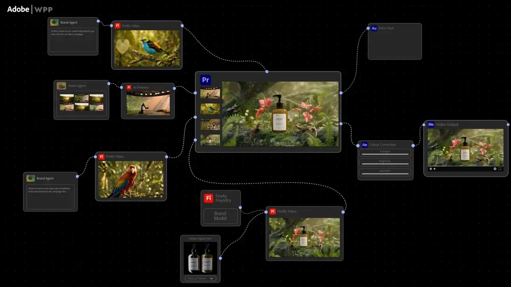
Как NVIDIA, Adobe и WPP строят фабрику контента на ИИ-агентах — и почему это не маркетинговый хайп

ИИ рисует нейроны, которых не существует — и это экономит 157 лет ручной работы нейробиологов

GPT-5.4-Cyber, $10 млн грантов и 18 партнёров: как OpenAI строит коалицию киберзащиты

OpenAI дала агентам изолированные среды выполнения и файловую систему — что это меняет для разработчиков